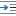

DITA Maps Manager
Oxygen XML Author provides a view for managing and editing DITA maps. The DITA Maps Manager view presents a DITA map as a tree or table of contents. It allows you to navigate the topics and maps, make changes, and apply transformation scenarios to obtain various output formats. By default, it is located to the left of the main editor. If the view is not displayed, it can be opened by selecting it from the menu.
The DITA Maps Manager includes a variety of useful actions to help you edit and organize the structure of your DITA maps and topics. The actions that are available and their functions depend on the type of nodes that are selected in the DITA Maps Manager. If you select multiple sibling nodes, the result of the actions will be applied to all the selected nodes. If you select multiple nodes that are not on the same hierarchical level, the actions will be applied to the parent node and the child nodes will inherit certain attributes from the parent node.

Each node is displayed with an icon representing the type of DITA resource. For example, a
DITA Map is displayed with an  icon, a DITA Topic is displayed with
icon, a DITA Topic is displayed with  , a DITA Task is displayed with
, a DITA Task is displayed with  , etc. Any node that has
, etc. Any node that has
processing-role="resource-only" set in its properties is displayed with a
gray dot in the bottom-right corner of the icon ().
Opening Maps in the DITA Maps Manager
- To open a submap in its own tab, simply double-click it (or right-click it and select Open).
- If you open a file with a .ditamap or
.bookmap extension (from the Project view or a system browser), a dialog box is
opened that offers you the choice of opening it in the DITA Maps
Manager or the XML editor.Note: If you select the Do not show the dialog again option, it will always be opened in the method that you choose and you will not be asked in the future. However, you can reset this by selecting the Always ask choice for the When opening a map option in the DITA preferences page.
- Right-click a map file in the Project view and select .
- If you have a DITA map file open in the XML editor, you can right-click the title tab and select Open in DITA Maps Manager View.
By default, when a map is opened in the DITA Maps Manager, its index is automatically refreshed. You can disable this feature by deselecting the Refresh index when opening a map in DITA Maps Manager option in the Open/Find Resource preferences page.
Submap Nodes
If your root map (main DITA map) references other maps (submaps), they can be expanded and you can navigate their content in the DITA Maps Manager, but the references within those submaps are not editable, by default, unless you open the submap separately in its own tab. The references within submap nodes are shown with a gray background.
Moving Nodes in the DITA Maps Manager
You can move topics or nodes within the same map, or other maps, by dragging and dropping them into the desired position. You can arrange the nodes by dragging and dropping one or more nodes at a time. You can arrange multiple topics by dragging them while pressing the Ctrl or Shift key. Drop operations can be performed before, after, or as child of the targeted node.
Operations include:
- Copy
- Select the nodes you want to copy and start dragging them. Before dropping them in
the appropriate place, press and hold the
Ctrl key. The mouse pointer changes to a
 symbol to indicate that a copy operation is
being performed.
symbol to indicate that a copy operation is
being performed. - Move
- Select the nodes you want to move and drag and drop them in the appropriate place.
- Promote (Alt + LeftArrow) /Demote (Alt + RightArrow)
- You can move nodes between child and parent nodes by using the Promote (Alt + LeftArrow) and Demote (Alt + RightArrow) operations.
DITA Maps Manager Toolbar
 New DITA
Map
New DITA
Map- Opens the New Document wizard that you can use to create a new DITA map document.
 Open Drop-down Menu
Open Drop-down Menu- You can use this drop-down menu to open new DITA maps or to reopen
recently viewed maps. The drop-down menu contains the following:
- List of recently viewed DITA maps that can be selected to reopen them.
- Clear history - Clears the history list of the recently viewed DITA maps.
 Open - Allows you to open the map in the DITA Maps Manager
view. You can also open a map by dragging it from the file system
explorer and dropping it into the DITA Maps Manager view.
Open - Allows you to open the map in the DITA Maps Manager
view. You can also open a map by dragging it from the file system
explorer and dropping it into the DITA Maps Manager view. Open
URL - Displays the Open
URL dialog box where you can specify a URL (defined by a protocol,
host, resource path, and an optional port) or use the browsing actions in the
Open
URL - Displays the Open
URL dialog box where you can specify a URL (defined by a protocol,
host, resource path, and an optional port) or use the browsing actions in the
 Browse for
remote file drop-down menu.
Browse for
remote file drop-down menu.
 Save
(Ctrl + S (Meta + S on Mac OS))
Save
(Ctrl + S (Meta + S on Mac OS))- Saves the current DITA map.
 Validate and Check for Completeness
Validate and Check for Completeness- Checks the validity and integrity of the map.
 Apply Transformation Scenario(s)
Apply Transformation Scenario(s)- Applies the DITA Map transformation scenario that is associated with the current map.
 Configure Transformation Scenario(s)
Configure Transformation Scenario(s)- Opens the Configure Transformation Scenarios(s) dialog box where you can edit or create transformation scenarios or associate a DITA Map transformation scenario with the current map.
 Open Map in Editor with Resolved Topics
Open Map in Editor with Resolved Topics-
Opens the DITA map in the main editor area with content from all topic references expanded in-place. Referenced content is presented as read-only by default. To edit it, you must use the Edit Reference contextual menu action to open the source topic that contains the referenced content.
If you want to edit the referenced topics directly without having to open the source document, go to and select the Allow referenced content to be edited (Experimental) option. Since a single topic may be referenced in multiple places in the DITA map, be careful not to make conflicting changes to that topic.
Tip: If you want to print the expanded content, you should consider changing selecting + Print ready from the Styles drop-down menu on the toolbar.  Open
Map in Editor
Open
Map in Editor- For complex operations that cannot be performed in the simplified DITA
Maps Manager view (for instance, editing a relationship table) you can
open the map in the main editing area. Note: You can also use this action to open referenced DITA maps in the Editor.
 Link
with Editor
Link
with Editor- Toggles the synchronization between the file path of the current editor and the
selected topic reference in the DITA Maps Manager view. If
enabled, it results in the following types of synchronizations:
- If you select a topic tab in the main editing area and it is referenced in the map currently opened in the DITA Maps Manager, the reference to that topic is selected in the DITA Maps Manager.
- If you have a map opened in both the DITA Maps Manager and the main editor, selecting the map tab in the main editing area opens that map in the DITA Maps Manager.
- If you have a map opened in both the DITA Maps Manager and the main editor (Author mode) and, selecting one or more topicrefs in the DITA Maps Manager will also select the same topicrefs in the main editor.
- If you have a map opened in both the DITA Maps Manager and the main editor (Author mode) and, selecting one or more topicrefs in the main editor will also select the same topicrefs in the DITA Maps Manager.
 Settings
Settings-
- Show extended toolbar
- Toggles whether or not the extended toolbar will be displayed in the DITA Maps Manager toolbar.
- Show context toolbar
- Toggles whether or not the Context option will be displayed in the DITA Maps Manager toolbar.
- Show topic titles
- Toggles how topics are presented in the DITA Maps
Manager. If selected, the title of each topic is shown.
Otherwise, the file path (value of the
@hrefattribute) for each topic is shown.
- Root Map Drop-down menu
- The drop-down menu displayed after Context can be used to specify the DITA root map) that Oxygen XML Author uses to define a hierarchical structure of submaps and to establish a key space that defines the keys that are propagated throughout the entire map structure. For more information, see Selecting a Root Map.
 Choose
Root Map Drop-down menu
Choose
Root Map Drop-down menu- You can use this drop-down menu to browse for root maps with the
following choices:
- Browse for
local file - Opens a local file browser dialog box, allowing you to
select a local root map.
- Browse for
remote file - Displays the Open URL
dialog box that allows you to select a remotely stored root
map.
 Browse
for archived file - Displays the Archive
Browser that allows you to browse the content of an archive
and choose a root map.
Browse
for archived file - Displays the Archive
Browser that allows you to browse the content of an archive
and choose a root map. Browse Data Source Explorer - Opens the
Data Source Explorer that allows you to browse
the data sources defined in the Data Sources
preferences page.Tip: You can open the Data Sources preferences page by using the Configure Database Sources shortcut from the Open URL dialog box.
Browse Data Source Explorer - Opens the
Data Source Explorer that allows you to browse
the data sources defined in the Data Sources
preferences page.Tip: You can open the Data Sources preferences page by using the Configure Database Sources shortcut from the Open URL dialog box. Search for file - Displays the Find Resource dialog
box to search for a root
map.
Search for file - Displays the Find Resource dialog
box to search for a root
map.
 Profiling/Conditional Text Drop-down Menu
Profiling/Conditional Text Drop-down Menu- You can use this drop-down menu to select and apply a defined profiling condition
set to filter the content based on that condition set. The drop-down menu
also contains the following other options:
- Show Profiling Colors and Styles - Select this option to turn on conditional styling. To configure the colors and styles open the Preferences dialog box and go to .
- Show Profiling Attributes - Select this option to display the values of the profiling attributes at the end of the titles of topic references. When selected, the values of the profiling attributes are displayed in both the DITA Maps Manager view and in the Author view.
- Show Excluded Content - Controls if the content filtered out by a particular condition set is hidden or grayed-out in the editor area and in the Outline and DITA Maps Manager views. When this option is selected, the content filtered by the currently applied condition set is grayed-out. To show only the content that matches the currently applied condition set, deselect this option.
 Profiling
Settings - Opens the preferences page for adding and editing the
profiling conditions that you can apply in the DITA Maps
Manager view and the Author mode editing
pane. When a profiling condition set is applied, the keys that are defined in the
DITA map are gathered by filtering out the excluded content.
Profiling
Settings - Opens the preferences page for adding and editing the
profiling conditions that you can apply in the DITA Maps
Manager view and the Author mode editing
pane. When a profiling condition set is applied, the keys that are defined in the
DITA map are gathered by filtering out the excluded content.
Settings menu: Insert Topic
Reference
Insert Topic
Reference- Opens the Insert Reference dialog box that allows you to insert references to targets such as topics, maps, topic sets, or key definitions.
 Refresh References
Refresh References- You can use this action to manually trigger a refresh and update of all referenced documents. This action is useful when the referenced documents are modified externally. When they are modified and saved from Oxygen XML Author, the DITA map is updated automatically.
 Edit Properties
Edit Properties- Opens the Edit Properties dialog box that allows you to configure the properties of a selected node. For more details about this dialog box, see Edit Properties Dialog Box.
 Edit
Attributes
Edit
Attributes- Opens a small in-place editor that allows you to edit the attributes of a selected node. You can find more details about this action in the Attributes View in Author Mode topic.
 Delete
Delete- Deletes the selected node.
 Move
Up
Move
Up- Moves the selected node up within the DITA map tree.
 Move
Down
Move
Down- Moves the selected node down within the DITA map tree.
 Promote(Alt +
LeftArrow)
Promote(Alt +
LeftArrow)- Moves the selected node up one level to the level of its parent node.
- Demote(Alt + RightArrow)
- Moves the selected node down one level to the level of its child nodes.
Contextual Menu of the DITA Maps Manager
- Root Map
-
The following actions can be invoked from the contextual menu on the root map of an opened DITA map (many of them are also available in theDITA Maps menu):
- Open Map in Editor
- For complex operations that cannot be performed in the simplified DITA Maps Manager view (for instance, editing a relationship table) you can open the map in the main editing area.
- Open Map in Editor with Resolved
Topics
- Opens the DITA map in the main editor area with content from all topic references, expanded in-place. Content from the referenced topics is presented as read-only and you have to use the contextual menu action Edit Reference to open the topic for editing.
- Export DITA Map
- Opens a dialog box that allows you to choose a destination for exporting the DITA map. It also includes an Export as Zip archive option that allows you to package the DITA map as a zip archive. The result will contain all directly and indirectly referenced topics from the DITA Map.
- Find Unreferenced Resources
- Allows you to search for orphaned resources that are not referenced in the DITA maps.
 Add to Review
Task
Add to Review
Task- This action can be used to add the selected documents to a task in the Content Fusion Tasks Manager view. Oxygen Content Fusion is a flexible, intuitive collaboration platform designed to adapt to any type of documentation review workflow. This functionality is available through a pre-installed connector add-on. To fully take advantage of all of the benefits and features of Content Fusion, your organization will need an Oxygen Content Fusion Enterprise Server. For more information, see the Oxygen Content Fusion website.
 Show
Feedback Comments Manager
Show
Feedback Comments Manager- Opens the Feedback Comments Manager view. This view is for those who use Oxygen Feedback to provide a commenting component in WebHelp output. This view makes it possible to see all the comments added by users in WebHelp output directly in Oxygen XML Author.
- Edit Properties
- Opens the Edit Properties dialog box that allows you to configure the properties of a selected node. For more details about this dialog box, see Edit Properties Dialog Box.
- Fast Create Topics
- Opens the Fast Create Topics dialog box that allows you to quickly create multiple skeleton topics at once and you can specify their hierarchical structure within the DITA map.
- Append Child submenu
- Container sub-menu for a number of actions that create a map node as a child of the
currently selected node:
- New - Opens a dialog box that allows you to configure some options for inserting a new topic.
 Reference - Inserts a reference to a topic file. You can find more
details about this action in the Inserting References topic.
Reference - Inserts a reference to a topic file. You can find more
details about this action in the Inserting References topic.- Reference to the currently edited file - Inserts a reference to the currently edited file. You can find more details about this action in the Inserting References topic.
- Key Reference - Opens an Insert Key Definition dialog box that allows you to insert a targeted key definition (for example, to target a resource such as an image or external link).
- Key Reference with Keyword - Opens an Insert Key Definition dialog box that allows you to define a key and a value inside a keyword.
- A set of actions that open the Insert Reference dialog box that allow you to insert various reference specializations (such as Anchor Reference, Glossary Reference, Map Reference, Navigation Reference, Topic Group, Topic Head, Topic Reference, Topic Set, Topic Set Reference).
 Search References
Search References- Searches all references to the current topic in the entire DITA map. It also reports references that are defined as related links in relationship tables. If you have enabled Master Files support, it also searches for references in the DITA maps added to the Master Files folder.
- Refactoring submenu
-
The following actions are available from this submenu when invokes from a root map:
- Rename resource
- Allows you to change the name of a resource linked in the edited DITA map and you have the option of updating all the references to the renamed DITA resource. If you have enabled Master Files support, it also searches for references in the DITA maps added to the Master Files folder and it provides the option of updating all the references even for non-DITA resources.
- Move resource
- Allows you to change the location on disk of a resource linked in the edited DITA map and you have the option of updating all the references to the moved DITA resources. If you have enabled Master Files support, it also searches for references in the DITA maps added to the Master Files folder and it provides the option of updating all the references even for non-DITA resources.
- Rename Key
- Use this operation to rename a key. It also updates all references to it. Note that it does not work on DITA 1.3 key scopes.
- Convert to Concept
- Use this operation to convert a DITA topic (of any type) to a DITA Concept topic type (for example, Topic to Concept).
- Convert to General Task
- Use this operation to convert a DITA topic (of any type) to a DITA General Task topic type (for example, Task to General Task). A DITA General Task is a less restrictive alternative to the Strict Task information type.
- Convert to Reference
- Use this operation to convert a DITA topic (of any type) to a DITA Reference topic type (for example, Topic to Reference).
- Convert to Task
- Use this operation to convert a DITA topic (of any type) to a DITA Task topic type (for example, Topic to Task).
- Convert to Topic
- Use this operation to convert a DITA topic (of any type) to a DITA Topic (for example, Task to Topic).
- Convert to Troubleshooting
- Use this operation to convert a DITA topic (of any type) to a DITA Troubleshooting topic type (for example, Topic to Troubleshooting).
- Other XML Refactoring Actions
- For your convenience, the last 5 XML Refactoring tool operations that were finished or previewed will also appear in this submenu.
 XML Refactoring
XML Refactoring- Opens the XML Refactoring tool wizard that presents refactoring operations to assist you with managing the structure of your XML documents.
 Find/Replace in Files
Find/Replace in Files- Opens the Find/Replace in Files dialog box that allows you to find and replace content across multiple files.
 Check
Spelling in Files
Check
Spelling in Files- Allows you to spell check multiple files.
 Paste
Paste- Allows you to paste content from the clipboard into the DITA map.
- Paste Before
- Pastes the content of the clipboard (only if it is a part of the DITA map) before the currently selected DITA map node.
- Paste After
- Pastes the content of the clipboard (only if it is a part of the DITA map) after the currently selected DITA map node.
 Expand All
Expand All- Allows you to expand the entire DITA map structure.
 Collapse
All
Collapse
All- Allows you to collapse the entire DITA map structure.
- Editable Child Nodes
-
The following actions are available when the contextual menu is invoked on an editable child node of a DITA map (submaps need to be opened in the DITA Maps Manager to access these actions since they are in a read-only state in the parent map):Note: If multiple nodes are selected, the availability of the actions depends on the nodes that are selected.
- Open
- Opens the selected resource in the editor.
- Add to Review
Task
- This action can be used to add the selected documents to a task in the Content Fusion Tasks Manager view. Oxygen Content Fusion is a flexible, intuitive collaboration platform designed to adapt to any type of documentation review workflow. This functionality is available through a pre-installed connector add-on. To fully take advantage of all of the benefits and features of Content Fusion, your organization will need an Oxygen Content Fusion Enterprise Server. For more information, see the Oxygen Content Fusion website.
- Edit Properties
- Opens the Edit Properties dialog box that allows you to configure the properties of a selected node. For more details about this dialog box, see Edit Properties Dialog Box.
- Fast Create Topics
- Opens the Fast Create Topics dialog box that allows you to quickly create multiple skeleton topics at once and you can specify their hierarchical structure within the DITA map.
- Append Child submenu
- Container sub-menu for a number of actions that create a map node as a child of the
currently selected node:
- New - Opens a dialog box that allows you to configure some options for inserting a new topic.
- Reference - Inserts a reference to a topic file. You can find more
details about this action in the Inserting References topic.
- Reference to the currently edited file - Inserts a reference to the currently edited file. You can find more details about this action in the Inserting References topic.
- Key Reference - Opens an Insert Key Definition dialog box that allows you to insert a targeted key definition (for example, to target a resource such as an image or external link).
- Key Reference with Keyword - Opens an Insert Key Definition dialog box that allows you to define a key and a value inside a keyword.
- A set of actions that open the Insert Reference dialog box that allow you to insert various reference specializations (such as Anchor Reference, Glossary Reference, Map Reference, Navigation Reference, Topic Group, Topic Head, Topic Reference, Topic Set, Topic Set Reference).
- Insert Before submenu
- Container sub-menus for a number of actions that create a map node as a
sibling of the currently selected node, above the current node in the map:
- New - Opens a dialog box that allows you to configure some options for inserting a new topic.
- Reference - Inserts a reference to a topic file. You can find more
details about this action in the Inserting References topic.
- Reference to the currently edited file - Inserts a reference to the currently edited file. You can find more details about this action in the Inserting References topic.
- Key Reference - Opens an Insert Key Definition dialog box that allows you to insert a targeted key definition (for example, to target a resource such as an image or external link).
- Key Reference with Keyword - Opens an Insert Key Definition dialog box that allows you to define a key and a value inside a keyword.
- A set of actions that open the Insert Reference dialog box that allow you to insert various reference specializations (such as Anchor Reference, Glossary Reference, Map Reference, Navigation Reference, Topic Group, Topic Head, Topic Reference, Topic Set, Topic Set Reference).
- Insert After submenu
- Container sub-menus for a number of actions that create a map node as a
sibling of the currently selected node, below the current node in the map:
- New - Opens a dialog box that allows you to configure some options for inserting a new topic.
- Reference - Inserts a reference to a topic file. You can find more
details about this action in the Inserting References topic.
- Reference to the currently edited file - Inserts a reference to the currently edited file. You can find more details about this action in the Inserting References topic.
- Key Reference - Opens an Insert Key Definition dialog box that allows you to insert a targeted key definition (for example, to target a resource such as an image or external link).
- Key Reference with Keyword - Opens an Insert Key Definition dialog box that allows you to define a key and a value inside a keyword.
- A set of actions that open the Insert Reference dialog box that allow you to insert various reference specializations (such as Anchor Reference, Glossary Reference, Map Reference, Navigation Reference, Topic Group, Topic Head, Topic Reference, Topic Set, Topic Set Reference).
- Search References
- Searches all references to the current topic in the entire DITA map. It also reports references that are defined as related links in relationship tables. If you have enabled Master Files support, it also searches for references in the DITA maps added to the Master Files folder.
- Refactoring submenu
-
The following actions are available from this submenu:
- Convert Markdown to DITA Topic (Available for Markdown documents)
- Opens a dialog box that allows you to configure options for converting the Markdown document into a DITA topic.
- Rename resource
- Allows you to change the name of a resource linked in the edited DITA map and you have the option of updating all the references to the renamed DITA resource. If you have enabled Master Files support, it also searches for references in the DITA maps added to the Master Files folder and it provides the option of updating all the references even for non-DITA resources.
- Move resource
- Allows you to change the location on disk of a resource linked in the edited DITA map and you have the option of updating all the references to the moved DITA resources. If you have enabled Master Files support, it also searches for references in the DITA maps added to the Master Files folder and it provides the option of updating all the references even for non-DITA resources.
- Extract to New DITA Map
- Use this operation to extract editable topics into a new DITA map. The operation will open a map creation dialog box where you can select the type of map and configure the title or file name. Click Create to complete the operation and a new DITA map will be inserted at the location where the action was invoked with the selected topic references moved into the new map.
- Rename Key
- Use this operation to rename a key. It also updates all references to it. Note that it does not work on DITA 1.3 key scopes.
- Convert Nested Topics to New Topics (Available from the contextual menu of editable maps/nodes in the DITA Maps Manager)
- Use this operation on topics that contain nested
<topic>elements to convert each nested topic to a new topic. Also, the new topics are added in the DITA Maps Manager as the first child topics of the original topic. - Convert Sections to New Topics (Available from the contextual menu of editable maps/nodes in the DITA Maps Manager)
- Use this operation on topics that contain multiple sections to convert each section to a new topic. Also, the new topics are added in the DITA Maps Manager as the first child topics of the original topic.
- Convert to Concept
- Use this operation to convert a DITA topic (of any type) to a DITA Concept topic type (for example, Topic to Concept).
- Convert to General Task
- Use this operation to convert a DITA topic (of any type) to a DITA General Task topic type (for example, Task to General Task). A DITA General Task is a less restrictive alternative to the Strict Task information type.
- Convert to Reference
- Use this operation to convert a DITA topic (of any type) to a DITA Reference topic type (for example, Topic to Reference).
- Convert to Task
- Use this operation to convert a DITA topic (of any type) to a DITA Task topic type (for example, Topic to Task).
- Convert to Topic
- Use this operation to convert a DITA topic (of any type) to a DITA Topic (for example, Task to Topic).
- Convert to Troubleshooting
- Use this operation to convert a DITA topic (of any type) to a DITA Troubleshooting topic type (for example, Topic to Troubleshooting).
- Other XML Refactoring Actions
- For your convenience, the last 5 XML Refactoring tool operations that were finished or previewed will also appear in this submenu.
- XML Refactoring
- Opens the XML Refactoring tool wizard that presents refactoring operations to assist you with managing the structure of your XML documents.
- Find/Replace in Files
- Opens the Find/Replace in Files dialog box that allows you to find and replace content across multiple files.
- Check
Spelling in Files
- Allows you to spell check multiple files.
 Cut
Cut
- Deletes the currently selected node and copies it to the clipboard.
 Copy
Copy- Copies the currently selected node to the clipboard.
- Paste
- Allows you to paste content from the clipboard into the DITA map.
- Paste Before
- Pastes the content of the clipboard (only if it is a part of the DITA map) before the currently selected DITA map node.
- Paste After
- Pastes the content of the clipboard (only if it is a part of the DITA map) after the currently selected DITA map node.
- Delete
- Deletes the currently selected node from the DITA map.
 Remove from
Disk
Remove from
Disk- This action can be used to remove the selected resource(s) from disk. Selecting this action will open a confirmation dialog box where you can also choose to remove the descendants by selecting the Also remove all descendants option. If you proceed, a search for references is triggered. If multiple references are detected for any of the selected resources, you will have the option to review them since this would lead to broken links. If you have enabled Master Files support, it also searches for references in the DITA maps added to the Master Files folder.
- Organize
- Allows you to organize the DITA map with the several submenu
actions:
- Move
Up - Moves the selected node up within the DITA
map tree.
- Move Down - Moves the selected node down within the
DITA map tree.
- Promote(Alt +
LeftArrow) - Moves
the selected node up one level to the level of its parent node.
- Demote(Alt + RightArrow) - Moves the selected node down one level to the level of its child nodes.
- Expand All
- Allows you to expand the entire DITA map structure.
- Collapse
All
- Allows you to collapse the entire DITA map structure.
- Other Nodes
-
The following additional actions are available when the contextual menu is invoked from other nodes, such as a submap node or a relationship table:
- Open Map in Editor (available when invoking on a submap)
- Opens the currently selected DITA map in the editor.
- Open parent DITA map (available when invoking on a read-only topic reference or a submap reference)
- Opens the parent DITA map of the currently selected reference in the DITA Maps Manager.
- Edit
Attributes (only available for relationship table nodes)
- Opens a small in-place editor that allows you to edit the attributes of a selected node. You can find more details about this action in the Attributes View in Author Mode topic.
- Edit Profiling Attributes (only available for relationship table nodes)
- Allows you to change the profiling attributes defined on the selected node.
For more information about the DITA Maps Manager view and many of its features, watch our video demonstration: